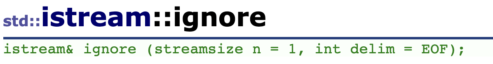
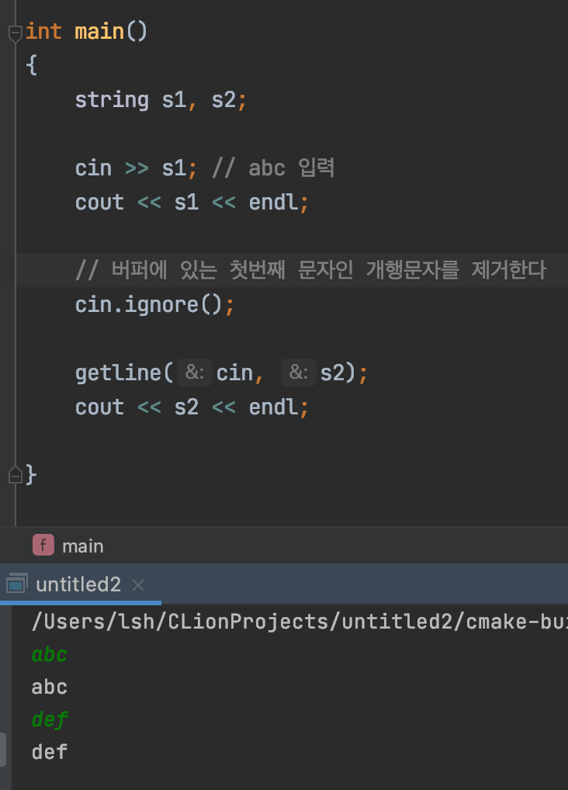

<meta charset="utf-8">
<html lang="ko">
<head>
    <link rel="stylesheet" type="text/css" href="./../style.css" />
    <title>c++) cin.ignore()</title>
</head>
<body id="tt-body-page" class="">
<div id="wrap" class="wrap-right">
    <div id="container">
        <main class="main ">
            <div class="area-main">
                <div class="area-view">
                    <div class="article-header">
                        <div class="inner-article-header">
                            <div class="box-meta">
                                <h2 class="title-article">c++) cin.ignore()</h2>
                                <div class="box-info">
                                    <p class="category">노트</p>
                                    <p class="date">2021-12-26 15:15:56</p>
                                </div>
                            </div>
                        </div>
                    </div>
                    <hr>
                    <div class="article-view">
                        <div class="contents_style">
                            <p data-ke-size="size16"><a href="https://www.cplusplus.com/reference/istream/istream/ignore/" target="_blank" rel="noopener">https://www.cplusplus.com/reference/istream/istream/ignore/</a></p>
<figure id="og_1640498327385" contenteditable="false" data-ke-type="opengraph" data-ke-align="alignCenter" data-og-type="website" data-og-title="istream::ignore - C++ Reference" data-og-description="public member function &lt;istream&gt; &lt;iostream&gt; istream&amp; ignore (streamsize n = 1, int delim = EOF); Extract and discard characters Extracts characters from the input sequence and discards them, until either n characters have been extracted, or one compares eq" data-og-host="www.cplusplus.com" data-og-source-url="https://www.cplusplus.com/reference/istream/istream/ignore/" data-og-url="https://www.cplusplus.com/reference/istream/istream/ignore/" data-og-image=""><a href="https://www.cplusplus.com/reference/istream/istream/ignore/" target="_blank" rel="noopener" data-source-url="https://www.cplusplus.com/reference/istream/istream/ignore/">
<div class="og-image" style="background-image: url();">&nbsp;</div>
<div class="og-text">
<p class="og-title" data-ke-size="size16">istream::ignore - C++ Reference</p>
<p class="og-desc" data-ke-size="size16">public member function &lt;istream&gt; &lt;iostream&gt; istream&amp; ignore (streamsize n = 1, int delim = EOF); Extract and discard characters Extracts characters from the input sequence and discards them, until either n characters have been extracted, or one compares eq</p>
<p class="og-host" data-ke-size="size16">www.cplusplus.com</p>
</div>
</a></figure>
<p data-ke-size="size16"><a href="https://www.cplusplus.com/reference/string/string/getline/" target="_blank" rel="noopener">https://www.cplusplus.com/reference/string/string/getline/</a></p>
<figure id="og_1640498565745" contenteditable="false" data-ke-type="opengraph" data-ke-align="alignCenter" data-og-type="website" data-og-title="getline (string) - C++ Reference" data-og-description="function &lt;string&gt; std::getline (string) (1)istream&amp; getline (istream&amp; is, string&amp; str, char delim); (2)istream&amp; getline (istream&amp; is, string&amp; str); (1)istream&amp; getline (istream&amp; is, string&amp; str, char delim); istream&amp; getline (istream&amp;&amp; is, string&amp; str, cha" data-og-host="www.cplusplus.com" data-og-source-url="https://www.cplusplus.com/reference/string/string/getline/" data-og-url="https://www.cplusplus.com/reference/string/string/getline/" data-og-image=""><a href="https://www.cplusplus.com/reference/string/string/getline/" target="_blank" rel="noopener" data-source-url="https://www.cplusplus.com/reference/string/string/getline/">
<div class="og-image" style="background-image: url();">&nbsp;</div>
<div class="og-text">
<p class="og-title" data-ke-size="size16">getline (string) - C++ Reference</p>
<p class="og-desc" data-ke-size="size16">function &lt;string&gt; std::getline (string) (1)istream&amp; getline (istream&amp; is, string&amp; str, char delim); (2)istream&amp; getline (istream&amp; is, string&amp; str); (1)istream&amp; getline (istream&amp; is, string&amp; str, char delim); istream&amp; getline (istream&amp;&amp; is, string&amp; str, cha</p>
<p class="og-host" data-ke-size="size16">www.cplusplus.com</p>
</div>
</a></figure>
<p data-ke-size="size16">&nbsp;</p>
<p data-ke-size="size16">우선 getline 함수는 레퍼런스를 보면 아래와 같다.</p>
<p><figure class="imageblock alignCenter" >
    <span data-lightbox="lightbox">
        
    </span>
    <figcaption></figcaption>
</figure></p>
<p data-ke-size="size16"><b>getline(cin, str)</b> 이런식으로 코드가 있다면,&nbsp;</p>
<p data-ke-size="size16">cin 에서 delimiter(구분자)나 개행문자를 만날때까지 문자를 입력받아서 str 변수에 저장한다.</p>
<p data-ke-size="size16">또한&nbsp;</p>
<p data-ke-size="size16"><b>cin</b>은 개행문자 ('\n')을 변수에 담지 않고, 입력 버퍼에 남겨둔다.&nbsp;</p>
<p data-ke-size="size16">=&gt; getline()으로 입력 받았다면 '\n'을 변수에 담고&nbsp;</p>
<p data-ke-size="size16">&nbsp; &nbsp; &nbsp; cin()으로 입력 받았다면 '\n'을 변수에 담지않는다. (입력버퍼에 남겨둔다)</p>
<p data-ke-size="size16">&nbsp;</p>
<p data-ke-size="size16">따라서 아래와 같이 코드를 쓰면</p>
<p><figure class="imageblock alignLeft" width="304" height="402" >
    <span data-lightbox="lightbox">
        
    </span>
    <figcaption></figcaption>
</figure></p>
<p data-ke-size="size16">abc를 cin 으로 입력 받고 나면, 개행문자가 버퍼에 남아있는 상태다.</p>
<p data-ke-size="size16">따라서 바로 getline() 함수로 입력을 받으려 하면 버퍼에 있는 개행문자를 바로 만나기 때문에 입력받지 못하고 종료된다.</p>
<p data-ke-size="size16">&nbsp;</p>
<p data-ke-size="size16">여기서&nbsp;<b>cin.ignore()&nbsp;</b>를 쓰면 해결된다.</p>
<p data-ke-size="size16">&nbsp;</p>
<p><figure class="imageblock alignCenter" width="814" height="106" >
    <span data-lightbox="lightbox">
        
    </span>
    <figcaption></figcaption>
</figure></p>
<p data-ke-size="size16">ignore() 함수는 버퍼에서 n개의 문자 or 구분자 delim을 만날때까지 버퍼에서 문자를 읽어들여서 버린다.</p>
<p data-ke-size="size16">따라서 아래와 같이 쓰면</p>
<p><figure class="imageblock alignLeft" width="379" height="527" >
    <span data-lightbox="lightbox">
        
    </span>
    <figcaption></figcaption>
</figure></p>
<p data-ke-size="size16">abc를 입력 받은 후 버퍼에 남아있던 개행문자를 cin.ignore() 함수가 버려 버리므로써&nbsp;</p>
<p data-ke-size="size16">getline() 함수로 다음 문자들을 입력받을수 있다.&nbsp;</p>
<p data-ke-size="size16">&nbsp;</p>
<p data-ke-size="size16">&nbsp;</p>
<p data-ke-size="size16">&nbsp;</p>
<p data-ke-size="size16">##</p>
<p data-ke-size="size16"><b>cin</b><span>&nbsp;</span>을 통해&nbsp;<b>숫자</b>를 입력 받을 때는 바로 변수에 저장한다.</p>
<p data-ke-size="size16"><b>cin</b><span>&nbsp;</span>을 통해&nbsp;<b>문자</b>를 입력 받을 때는 입력 버퍼에 저장된 후, 버퍼에 저장 된 값을 읽어서 변수에 저장한다.</p>
<p data-ke-size="size16">&nbsp;</p>
                        </div>
                        <br/>
                        <div class="tags">
                            #C++ #getline #ignore 
                        </div>
                    </div>
                </div>
            </div>
        </main>
    </div>
</div>
</body>
</html>
